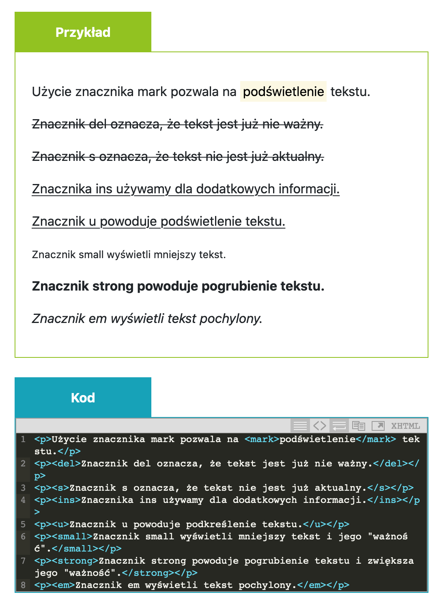

getbootstrap.com
bs4.kursbootstrap.pl
-
klasa container w bootstrapie jest wyśrodkowana
klasa container-fluid jest rozciągnięta na całą szerokość strony - div z klasą row ustawia wiersz i dzieli go na 12 kolumn
- divy w row ustawiamy z klasa col-... z nr 1-12 i taym samym ustawiamy im proporcjonalna szerokosc
- bootstrap jest oparty na flexboxie. Informacje o layoucie flex grid na stronie bootstrapa pod tym linkiem link do getbootstrap.com oraz do polskiej storny z kursem bootstrap
- działają te same właściwości co we flexie czyli align-items, justify, order itd
- STYLIZACJA TEKSTU - info na getbootstrap.com
- Można tworzyć nagłówki, bez podnoszenia wartości semantycznej.
tworzymy wtedy np. paragraf z klasą h1 - Mega duże nagłówki
tworzymy paragraf z klasą display(od 1 do 4) - dodanie do paragrafu czy spanu klasy "text-muted" wyszarza teks czyli stylizuje na wyciszony jakby
- dodanie do paragrafu czy spanu klasy "lead" pomniejsza tekst
- tekst wyrównujemuy poprzez dodawanie klas np text-center, text-left, text-right
- Bootstrap oferuje nam stylowanie elementami linowymi z html. Poniżej przykład

- Można tworzyć nagłówki, bez podnoszenia wartości semantycznej.
- LISTY - info o listach na getbootstrap.com
- usuwanie stylu listy dodajemy klase "list-unstyled"
- możemy ukłądać listy inlinowo
na rodzicu (ul, ol) ustwiamy klase "list-inline
na dzieciach (li) które chcemy ustawić w lini ustawiamy klasę "list-inline-item"
list-inline usuwa stylizacje listy (kropki, cyfry itd)
- OBRAZY - info o obrazach na getbootstrap.com
- TABELE
bardzo fajne responhyswne tabele mozna robic
wszytskie ustwaienia dot tabel na stropnie bootstrapa - KOLORY- info o kolorach na getbootstrap.com
- primary
- secondary
- success
- danger
- warning
- info
- light
- light
- dark
- white
- transparent
-
- examples
- p class="text-primary">
- a href="#" class="text-secondary"
- div class="p-3 mb-2 bg-success text-white"
- .bg-gradient-warning
- CIENIE - info o cieniach na getbootstrap.com
- Cienie w bootstrapie są cienkie, lepiej do tego używać css
- No shadow - usuwa cień jeśli np na rodzicu był ustawiony - dodajemy klasę "shadow-none"
- Small shadow - mały cień - dodajemy klasę "shadow-sm"
- Regular shadow - normalny cień - dodajemy klasę "shadow"
- Larger shadow - duży cień - dodajemy klasę "shadow-lg"
- BORDER - info o borderach na getbootstrap.com